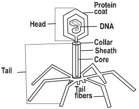

New Senior School Biology Practical Activity & Work Book one
Chapter
2
CLASSIFICATON OF
LIVING THINGS
LIVING THINGS
Notable Concepts
- Reasons for classifying living things
- Binomial nomenclature as an international tool
- Levels of classification
- Modern techniques of classification
- Distinction between prokaryotes and Eukaryotes
- Organization of the Five Kingdom system
fig2.1a: Bacterium
fig2.1b: Virus

fig2.1c: Bacteriophage

Background Information in Summary
Classifying is a way of organizing information, putting objects and ideas into groups or sets on the basis of similarities or certain criteria (basis). The science of biological classification is called Taxonomy of living things.
Classifying is a way of organizing information, putting objects and ideas into groups or sets on the basis of similarities or certain criteria (basis). The science of biological classification is called Taxonomy of living things.
Classification will help biologists to systematically identify and study
the enormous number of living things which is estimated to be about 5
Million different species, with ease.
Linnaeus established a system of naming organisms called
Binomial nomenclature. He also established the modern levels of
classification. Binomial nomenclature is used by scientist’s world wide.
Under the system, each species of organisms is scientifically known by
two names: the Generic name first, then the name of the species e.g.
Canis familiaris for dog.
The levels of taxonomic groups are: species, genus, family,
order, class, phylum and kingdom. Plants are grouped in divisions
instead of phyla. Sometimes intermidiate levels prefixed with sub and
super like sub phylum, super class are added. Modern taxonomy
establishes classification on the basis of :Phylogeny
( evolutionary history of species ) rather than physical similarities alone.
Prokaryotes are organisms that lack nuclei and other membrane
bound organelles. Most multicellular organisms and all protists are
eukaryotic organisms with distinct nucleus bound by nucleur
membrane and membrane bound organelles. Kingdoms of living things
have evolved through different systems of classification but, the five
kingdom system of classification, though not a perfect classification,
has gained wide acceptance. It is convenient for use in keeping with
current knowledge than any other known system of classification.The
five kingdom classification are : Animals(Kingdom Animalia). Plants
(Kingdom plantae), Fungi,(kingdom fungi) protists (Kingdom
protista) and Monera (Kingdom Monera).
Monerans and Viruses
All monerans are prokaryotes. There are two major types of monerans, the bacteria and its related forms under sub kingdom schizophytes and the blue green algae which falls under kingdom cyanophyta. Schizophytes are primarily heterotrophic bacteria-like organisms (note some bacteria can be chemosynthetic which is an autotrophic made of nutrition). Cyanophytes are autotrophic prokaryotes that contain chlorophyll.
Bacteria affect humans by causing diseases, spoiling food, while some
are useful. For instance saprophytic bacteria, nitrogen fixing
bacteria,and bacteria that produce antibiotics.Viruses are made of
nucleic acid core surrounded by a protein capsule. All viruses reproduce
in a living medium (living cells) and use the cells machinery to make new
virus particles. Scientist are uncertain about the evolutionary origin of a
virus.
Protista
Unlike monerans, protists are eukayrotic. All protist reproduce by mitosis and cell division. Many forms also reproduce sexually.
The kingdom protista are mostly single celled unicellular organisms which cannot be classified as monerans, fungi, animals or plants.
The kingdom is divided into plant like protists and Animal like protists.
Most protist live in water and body fluids of living organisms.
The plantlike protists: the three phyla of plantlike protist are distinguished by their photosynthesis pigments, cell wall structure and
means of locomotion.
These phyla are: Euglenophyta, pyrrophyta, and chrysophyta. Pylum Euglenopyta includes Euglena, phylum pyrrophyta
includes plankton while phylum chrysophyta has diatom as one of its members.
fig2.2a: Amoeba

Animal like protists
The following phyla are under theanimal like protists:Phylum mastigophora e.g Trypanosoma Phylum sacodina e.g Amoeba Phylum Sporozoa e.g Plasmodium and Phylum ciliophora e.g Paramecium
The following phyla are under theanimal like protists:Phylum mastigophora e.g Trypanosoma Phylum sacodina e.g Amoeba Phylum Sporozoa e.g Plasmodium and Phylum ciliophora e.g Paramecium
fig2.2b: Paramecium